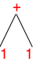
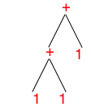

3 Redex, Quickly
3.1 Languages and Term
In Redex, you use define-language to specify the grammar of
abstract syntax trees you wish to work on:
> (define-language Colors (c red yellow green))
A name such as c is known as a non-terminal,
meaning it is a name for the trees enumerated on the right-hand side of
the language clause. Items such as red are literal leaf
elements of the collection of ASTs.
You can then use term to create terms from all kinds of Racket
data, and you can use define to give these terms a name.
> (term yellow) 'yellow
Technically, (term yellow) creates the Racket symbol
'yellow. Because Redex is a Racket-hosted domain-specific
language, you occasionally need to understand this relationship. It also
implies that you can use other Racket features on occasion, such as
define for giving (variable) names to terms:
> (define example1 (term yellow))
> example1 'yellow
> (define example2 (term green))
> (define example3 (term brown))
The second interaction shows that the placeholder example1 truly
stands for 'yellow.
In general, the way to understand a language definition is to see it as a recipe for generating tree-shaped values, in our domain called terms. In this light the Colors language says that the class of c terms consists of three values: red, yellow, green.
Clearly there is nothing tree-structured about Colors,
so consider a somewhat more interesting definition:
(define-language ArithmeticExpressions (e n (e + e) (e * e)) (n number))
The definition of e in ArithmeticExpression is
self-referential or recursive. Such definitions should make you
nervous because they could be nonsensical—
Obviously the first line of e’s definition says that all ns belong to e. Since (term 1) is a number, it is an e. Yeah! The class of es isn’t empty.
- Now the second like is a bit weirder. We know that + is meant to be the literal symbol. So what this means is that we need to find two es: one to put on the left side and one on the right. Lucky us, we have a proof that 1 belongs to e, so

As always in CS, we draw trees upside down. - for example. What you see from this interaction is that Redex uses Racket’s S-expressions to represent such terms. The tree for this second term is deeper and more complex than the first one:

Even though it too looks simple, you should now be able to understand why we call our terms “trees” and soon you will appreciate why we imagine trees when we process terms.
And now that you have the hang of it, you can generate as many e
terms as you want. As it turns out, almost all programming languages that
we wish to model have such self-referential definitions, but for now we
return to simpler definitions to grow your familiarity with
define-language and other Redex features.
With redex-match you can find out whether a term belongs to a
specific category of trees in a language:
> (redex-match Colors c example1) (list (match (list (bind 'c 'yellow))))
> (redex-match Colors c example2) (list (match (list (bind 'c 'green))))
> (redex-match Colors c example3) #f
It answers with with a list of possible matches if so;
otherwise, it produces #f (for false).
3.2 Metafunctions
To process terms in a language, you define metafunctions in the context of
a specific language:
> (define-metafunction Colors successor : c -> c [(successor red) green] [(successor green) yellow] [(successor yellow) red])
Here successor is defined for the Colors language from
above. The first line states an optional contract, which says that
successor is a function that consumes c trees and
produces them. The remaining clauses, enclosed in brackets, specify which
call produces which result.
A metafunction must be called in a term context:
> (term (successor yellow)) 'red
> (term (successor brown)) successor: (successor brown) is not in my domain
The first calls produces a term—
3.3 Testing
While DrRacket’s interaction area is a good medium for exploring programs,
it is not a suitable tool for testing programs. A unit test in
Redex consists of a function call and an expected result, sometimes a term,
sometimes a Racket value, say a number:
> (test-equal (term (successor red)) (term green))
> (test-equal (term (successor red)) (term red))
FAILED :5.0
actual: 'green
expected: 'red
Successful tests check quietly; failing tests signal a problem and stop
the program.